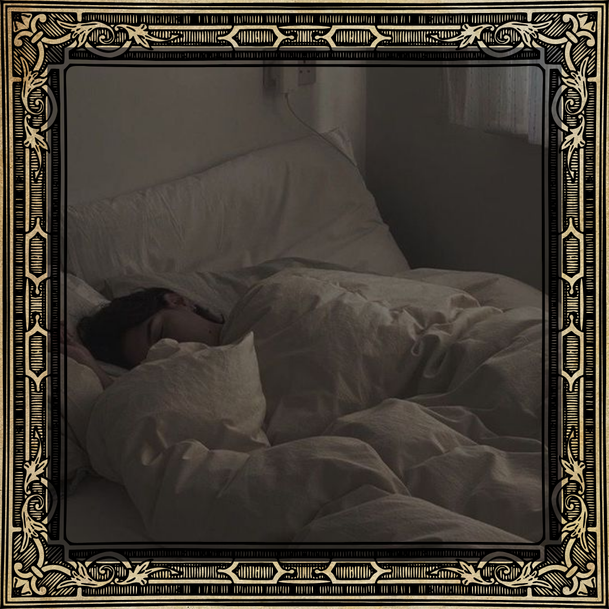
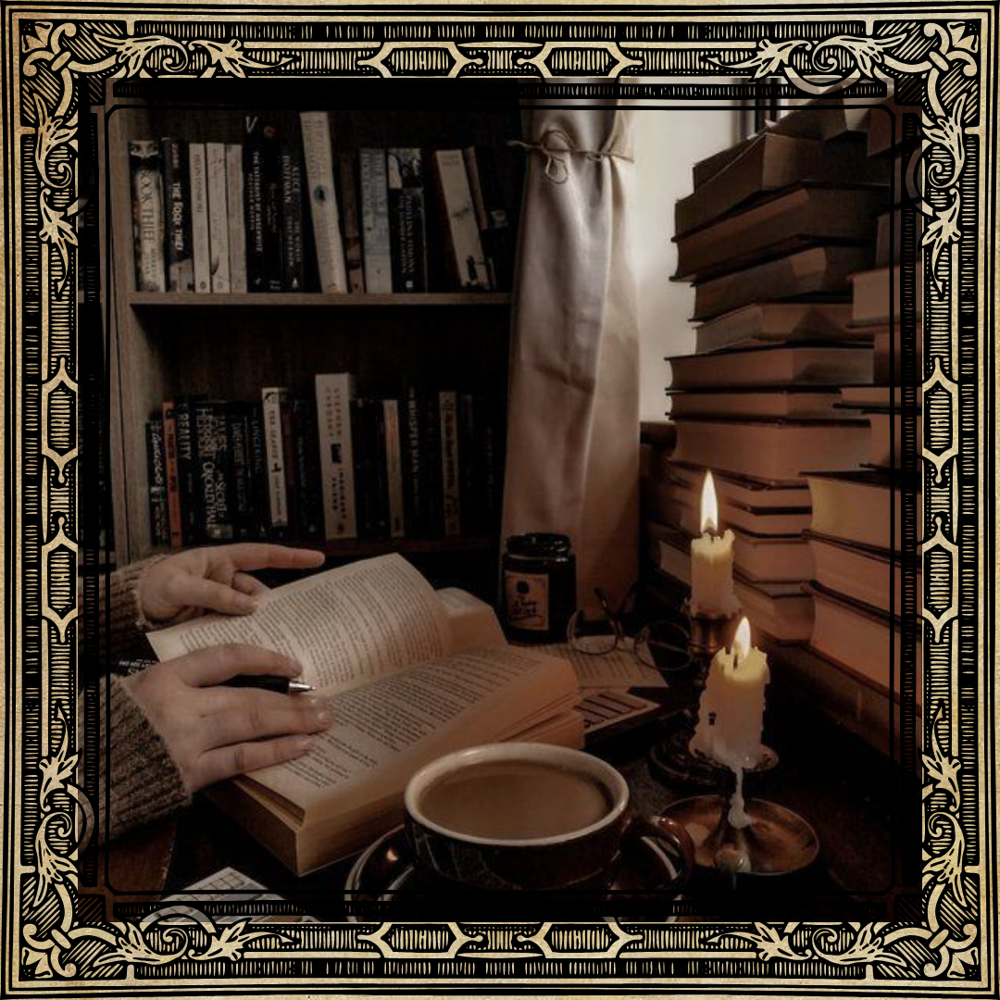
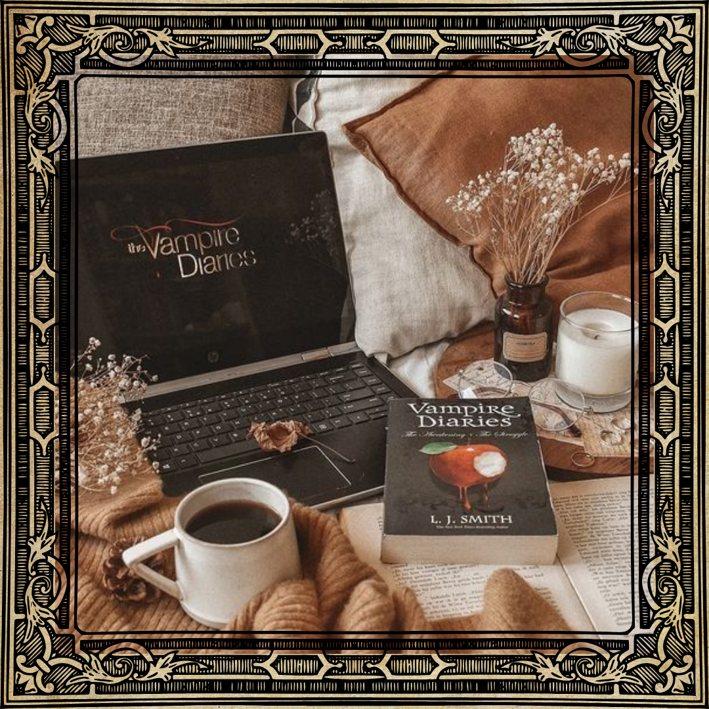
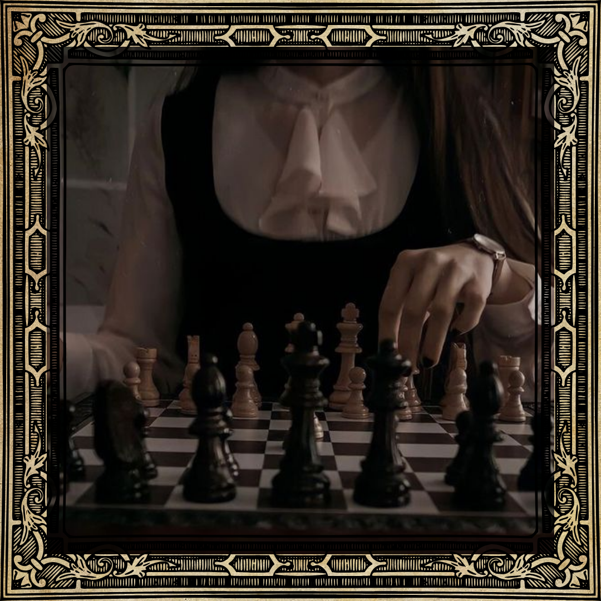
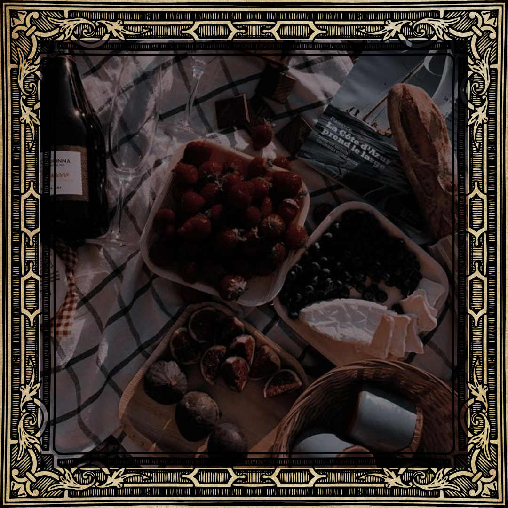
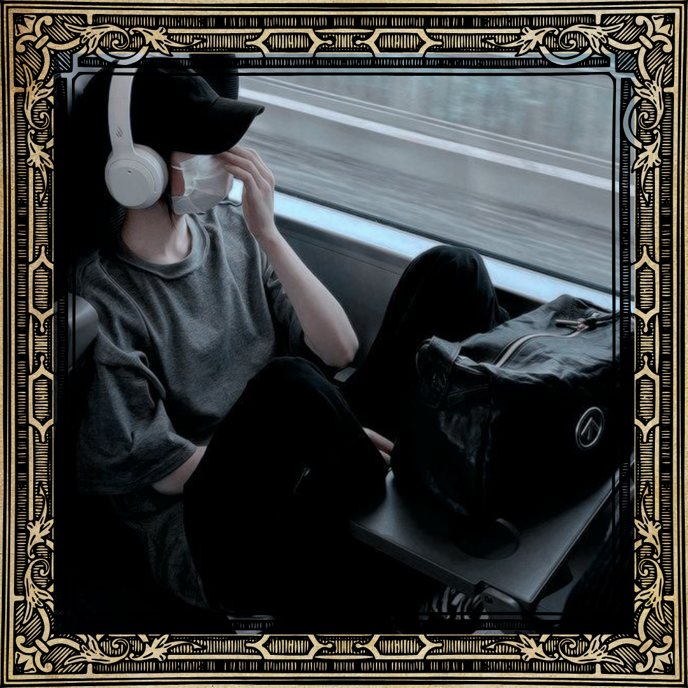

♥ HOBBIES ♥ |
|  |
- Sleeping -As an insomniac who struggles with sleepless nights, I cherish every moment of rest I can get when I’m not occupied with tasks. I make it a point to avoid daytime naps, particularly when I’m swamped with work. However, when time permits, sleep has become somewhat of a cherished “hobby” for me. |
 |
- Reading -Reading has always been a passion of mine. As I age, I find myself gravitating more towards books than engaging in activities that could potentially cause annoyance in my daily life. The saying ‘reading is an escape from real life’ rings true for me, and I find the addictive nature of it quite appealing. |
|
- Watching movies -In addition to reading, watching movies serves as a great distraction from life’s troubles. The temptation to binge-watch films, especially on the eve of exams or amidst a mountain of assignments, is increasingly challenging to resist. However, time constraints often limit my movie-watching endeavours. |
 |
- Playing games -Gaming is another love of mine. Regardless of the game, I’m always up for a challenge and, of course, a win. I confess, I can get competitive at times, but the joy of having someone to play with outweighs everything else. |
 |
|  |
- Eating -Yes, I’m a food lover. I consider eating a hobby. Why? The world is a treasure trove of delectable cuisines waiting to be explored, and I find it hard to resist. However, moderation is key, and greed should never take over. The most satisfying and delicious meals are those shared with others. |
 |
- Listening to music -Accomplishing tasks while listening to music is a craving I constantly indulge in. It enhances my focus and productivity. The strategy of completing my tasks before fully immersing myself in the music, thereby directing my brain to work without procrastination, seems to work wonders for me. However, I wouldn’t recommend listening to music while studying. |